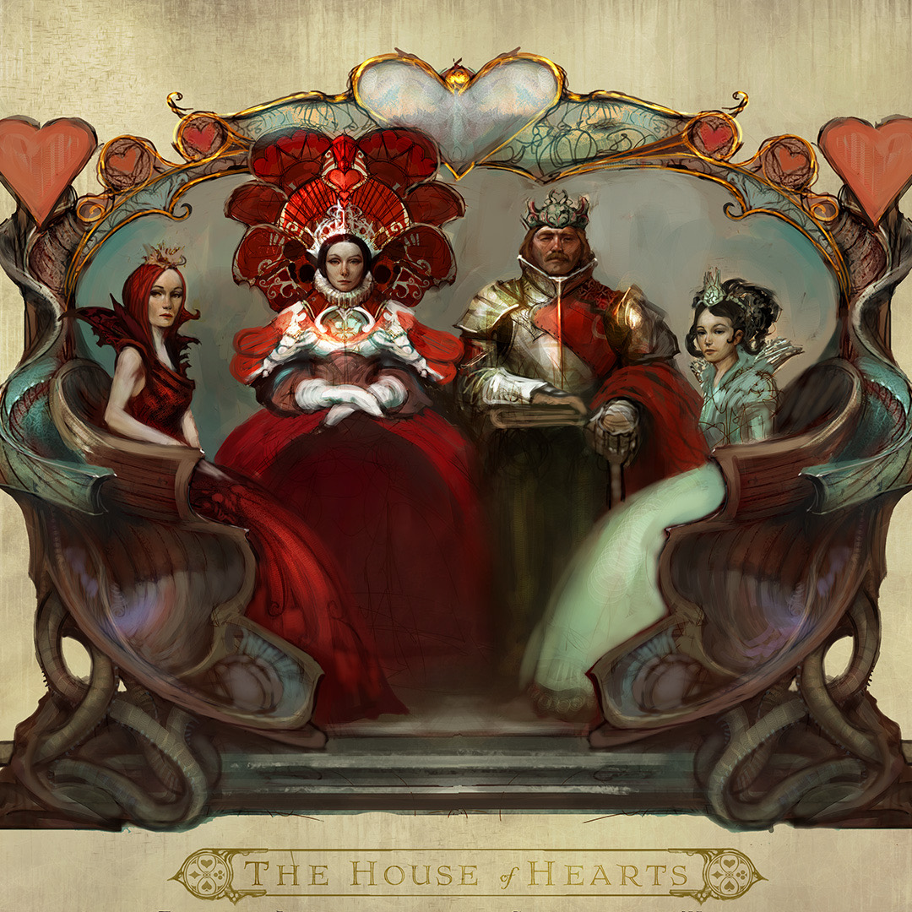
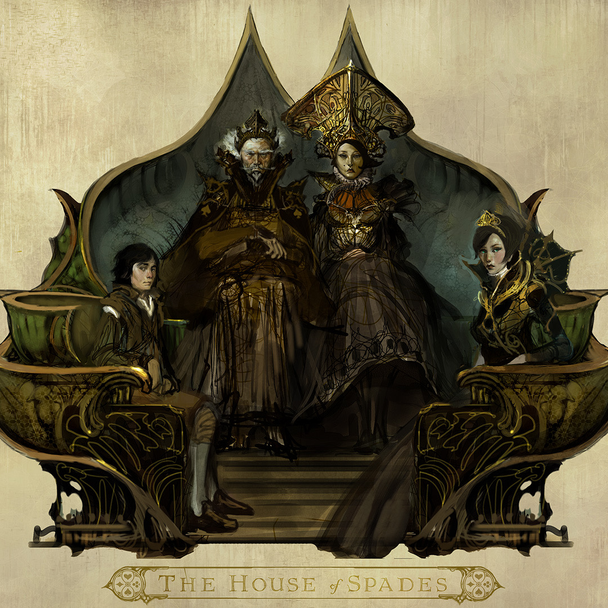
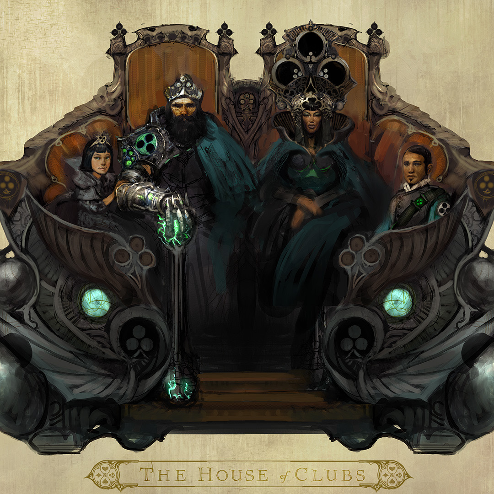
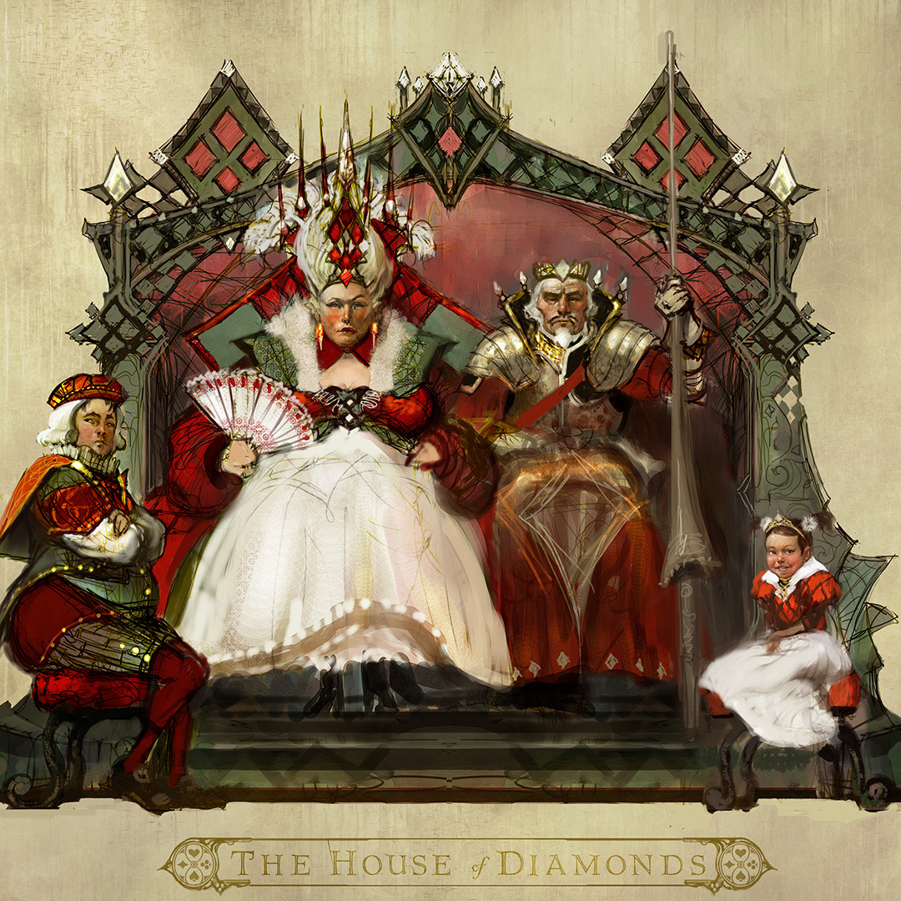

THE FOUR FAMILIES
Winning a throne is one thing. Governing a Queendom is another.
The Hearts may occupy Wonderland’s throne.
They do not own Wonderland.
For generations, four great Suit families have competed for influence across the Queendom:
Each has its own history.
Its own strengths.
Its own ambitions.
Its own relationship with power.
Hearts have ruled.

Spades make exceptional spies

Clubs value strength and independence.

Diamonds understand commerce, influence and control.

And beneath alliances forged in public are old resentments that don’t disappear simply because a war has been won.
This becomes one of the great engines of Alyss’s life after Redd.
She can defeat an enemy.
She cannot defeat politics.
The young princess who once fought to get home must become a Queen capable of holding together people who don’t always agree on what Wonderland should become.
Rival Suit families challenge her.
Political alliances shift.
Attempts are made on her life.
Beyond Wonderland’s borders, other rulers see opportunity.
And every compromise Alyss makes to preserve peace creates consequences of its own.
The throne turns out to be another battlefield.